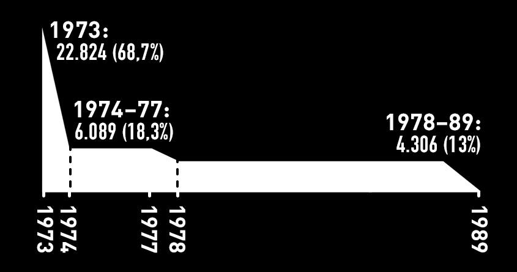
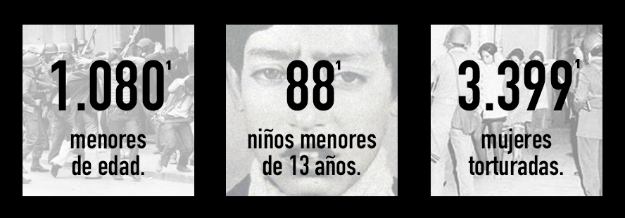
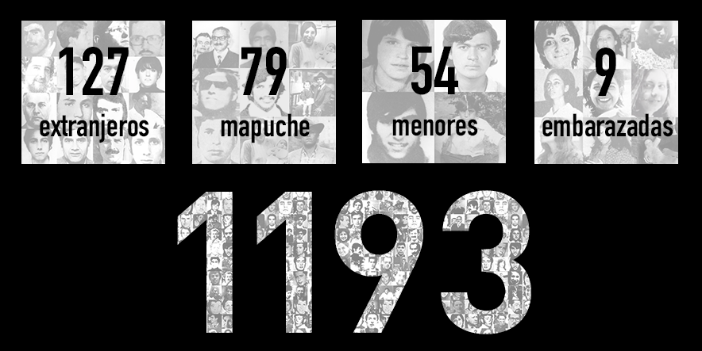

Amplio es el prontuario en materia de violación a los derechos humanos que pesa sobre la dictadura cívico-militar chilena.
El uso de la violencia entre 1973 y 1989 no fueron errores ni excesos: fue política de Estado. La eliminación selectiva de ciudadanos y ciudadanas contribuyó directamente a los objetivos políticos e ideológicos del régimen encabezado por el dictador Augusto Pinochet Ugarte.
La consecuencia directa de esto ha sido un sufrimiento permanente para las familias y el entorno social de las víctimas, así como un profundo sentimiento de injusticia e impunidad para nuestro país, en tanto el sistema que se alimentó con sangre chilena continúa más vivo que nunca.
Esta infografía busca resumir las atrocidades cometidas por la dictadura, basándose en informes oficiales y de organizaciones de derechos humanos.
Detenciones
33.221 civiles detenidos1
por motivos políticos
Al disolverse los derechos de libre reunión de grupos de personas en las calles, aplicarse un toque de queda que duraría 14 años, y llevarse a cabo una constante lucha contra las organizaciones sociales e ideas políticas, el régimen dictatorial hizo amplio uso de detenciones policiales como forma de represión directa y amedrentamiento.
A través de las detenciones se nutrían las organizaciones de inteligencia y se reprimía la oposición, generando así condiciones para la consolidación política del régimen.
Detenciones por período1

La cantidad y frecuencia de las detenciones fue mayor durante los primeros años de la dictadura, cuando el régimen se encontraba en su fase más violenta y represiva. Sin embargo, estas se mantuvieron a lo largo de todo el período, dado que la suspensión del Estado de derecho implicaba la posibilidad de detener a cualquier persona bajo cualquier pretexto.
“
Nos llevaban en camiones frigoríficos, amarrados, vendados, con capuchas… Me golpearon y aplicaron todas las formas de tormento: Golpes, corriente eléctrica, quemaduras con cera, cigarrillos; en un brazo aún tengo las marcas. Les dije que estaba embarazada, pero la verdad a ellos no les importó, al contrario. Me golpeaban con una fusta en el bajo vientre, para que perdiera mi guagua. Al tercer o cuarto día, comenzaron a violarme… varias veces me violaron y aplicaron corriente en la parrilla eléctrica…
(Prisionera política de Tejas Verdes)
Preguntaron mi nombre y fecha de nacimiento, me sentaron en una silla de madera y fierro y me esposaron por la espalda. Una especie de coro infernal repletaba el recinto. Oía gritos en distintos tonos, desde distintas bocas, que se mezclaban con las órdenes de los agentes. Eran gritos de espanto que mordían el aire y que al terminar seguían vibrando en el espacio. No eran gritos de miedo, eran de soledad frente a lo incomprensible.
(Hombre, detenido en Londres 38, región Metropolitana, 1974)
Al entrar a la comisaría, casi al anochecer, escuché unos gritos desgarradores que provenían de algún lugar de adentro de la comisaría. El terror más profundo que puede sentir un ser humano me invadió al reconocer que los gritos eran de mi hermano…
(Mujer, detenida en septiembre de 1973. Relato de su reclusión en la 4ª Comisaría de Talca, región del Maule)
Prisioneros políticos
9.794 prisioneros políticos
Los centros de detención y tortura tuvieron un rol vital en la política de represión dictatorial. Estos lugares serían establecidos con el solo propósito de llevar a cabo, en forma sistematizada y en total impunidad, actos de terrorismo de Estado.
Comisarías, regimientos, escuelas, edificios públicos y casas particulares son algunos de los lugares que serían utilizados con estos fines. Algunos de los más conocidos son el Estadio Nacional, Isla Dawson, Villa Grimaldi, Londres 38, la Venda Sexy, entre otros6

Torturas
24.529 víctimas de torturas1
Una enorme cantidad de los detenidos durante la dictadura fueron sometidos sistemáticamente a terribles vejámenes, tormentos y humillaciones por sus captores.

El objetivo de estos actos inhumanos (cometidos en su mayoría por ciudadanos que hoy siguen en libertad) fue principalmente el extraer información, pero más allá de este criterio funcional, la consecuencia directa de la tortura era el ejercer gobierno a través del terror, tanto sobre las víctimas directas como en el general de la población que poco a poco tomaba conocimiento de lo que podía costarles el oponerse a la dictadura.

“
En José Domingo Cañas fui golpeada en diversas partes del cuerpo. Nuevamente fui manoseada y obligada a presenciar la tortura de mi esposo. Fui desnudada y amarrada a un catre metálico en el que fui golpeada. Estaba embarazada con 6 meses de gestación.
(Mujer, detenida en septiembre de 1974. Relato de su reclusión en José Domingo Cañas N° 1315, región Metropolitana)
Fui encerrado en una barraca donde muchas veces escuchaba y otras veía cómo violaban a algunas niñas universitarias o simplemente liceanas, lo cual me producía mucho trastorno, por la impotencia de no poder hacer nada. Ésto se repitió muchas veces durante el tiempo que estuve detenido.
(Hombre, relato de su reclusión en la Base Naval El Morro, región del Biobío, 1973)
Me pusieron una venda sobre los ojos, me golpearon (…) Luego me instalaron electrodos en la cabeza y en las manos y me enviaron electricidad (…) vino un médico que me examinó ginecológicamente (…), violación, masturbación sobre mi cuerpo, me fotografiaron desnuda, todo esto interrumpido con descargas eléctricas…
(Mujer detenida en Venda Sexy, región Metropolitana, 1974)
Frecuencia de los diferentes tipos de tortura9

“
Me condujeron a una sala, al entrar sentí mucho olor a sangre (…) en forma violenta me desvistieron, dejándome sólo la capucha puesta, me pusieron en una especie de camilla amarrada de manos y pies con las piernas abiertas (…) Luego vino el interrogatorio (…), en seguida ordenó que me pusieran corriente en los senos, vagina y rodillas (…) vinieron nuevamente los golpes y las descargas eléctricas, cuando casi estaba inconsciente me levantaron la capucha hasta la nariz, me pusieron un vaso en la boca haciéndome ingerir un líquido, no supe qué pasó conmigo hasta el día siguiente que me devolvieron al campo de prisioneros.
(Mujer, 16 años de edad, detenida en Tejas Verdes, región de Valparaíso, 1973)
Después de los interrogatorios los compañeros llegaban completamente destruidos, ensangrentados. Tengo 76 años ahora (…) Una noche los sentimos cantar y después no supimos más de esa gente. Los compañeros estaban bastante masacrados [llora]. Uno estaba tan torturado que ya no podía andar (…) Fueron asesinados el 22 de septiembre (…) Tuve que cuidar en la enfermería a mi propio hijo, que era una barbaridad lo que botaba sangre. Con él quedamos de acuerdo de no conversar las cosas con nadie (…) Uno sufría internamente porque nunca le dijimos a los hijos, nietos, a la señora lo que habíamos vivido en el campo de concentración…
(Hombre, región de Valparaíso, 1989)
Asesinatos
2.279 personas asesinadas o ejecutadas2
por el Estado y las fuerzas de la Dictadura
Numerosas operaciones llevadas a cabo durante la dictadura involucraron la ejecución a sangre fría de civiles. En los centros de detención, se llamó entre las multitudes a determinados individuos para su ejecución pública. En allanamientos de viviendas o redadas en poblaciones, el uso de fuerza letal también era común.

Dirigentes sindicales o agrarios, militantes políticos, activistas o manifestantes eran blancos recurrentes. El resultado de esta brutal tendencia al abuso del poder militar es un amplio prontuario de ejecutados políticos que califican como violaciones a los derechos humanos.
La Caravana de la Muerte
Comitiva dirigida por el general Sergio Arellano Stark bajo mandato directo de Pinochet, que recorrió el país en helicóptero con el objetivo de “acelerar procesos” en las provincias; es decir, enseñar al resto de los uniformados el “trato” que merecían los “extremistas”.
La caravana dejó un saldo de más de 90 personas, 26 muertos tras su paso por el sur de Chile y 71 muertos en el norte del país. Sus hechos no se dieron a conocer sino hasta que terminó el régimen.

Operación Albania

Se produjo entre el 15 y 16 de junio de 1987. La CNI hizo uso minucioso de inteligencia obtenida luego del frustrado magnicidio de 1986 y de otras operaciones reprimidas, lo cual –junto a extensos seguimientos de las víctimas– posibilitó a la institución dar con los domicilios, sedes operativas o rutas de desplazamiento de 12 militantes del Frente Patriótico Manuel Rodríguez. Sus asesinatos fueron encubiertos por las autoridades como “enfrentamientos”.
Manuel Contreras
Director de la DINA entre 1974 y 1977, y luego de la CNI, fue responsable directo de miles de detenciones, torturas, asesinatos y desapariciones forzadas. Condenado a más de 360 años de prisión por estos crímenes, murió en la cárcel en 2015.
Fuentes13 indican que participó de al menos 18 homicidios, 78 secuestros y 20 casos de apremios ilegítimos.
Ejecutados por año

Exiliados
Más de 200.000 exiliados3
repartidos entre casi 50 países
Miles de chilenas y chilenos decidieron salir del país para proteger su vida o la de sus seres queridos. Otros pudieron conmutar sus condenas por el exilio, con la condición de no poder regresar al país.

Pero también la dictadura usó el exilio como mecanismo para remover opositores y enemigos políticos: en 1973 se instaura el decreto 81, que faculta a la autoridad para expulsar del país a sus ciudadanos arbitrariamente. Desde 1974, el decreto 604 “prohíbe el ingreso al territorio nacional a las personas (…) que a juicio del Gobierno constituyan un peligro para el Estado”.
Desaparecidos
1.193 detenidos desaparecidos2
 Padres y madres, hijos e hijas, hermanos y hermanas, compañeros y compañeras, fueron secuestrados desde sus casas (28,6%), lugar de trabajo (11,3%) o de la vía pública (24,3%) por agentes de la dictadura, para nunca más volver a ser vistos por sus seres queridos.

Esta práctica de eliminación selectiva también se constituyó en un método recurrentemente usado por organismos represores para llevar a cabo asesinatos y ejecuciones, y posteriormente ocultar toda evidencia, encubriendo los hechos a través de la desaparición del cadáver y la manipulación de informes y pericias, asegurando la impunidad de los crímenes.
Detenidos desaparecidos según su ocupación

Mujeres detenidas desaparecidas
Se contabilizan más de 60 mujeres detenidas desaparecidas por la dictadura cívico-militar.
Detenidas desaparecidas embarazadas14
10 mujeres fueron desaparecidas por la dictadura encontrándose embarazadas. No se sabe si llegaron a dar a luz, o si sus hijos fueron entregados en adopción ilegal. El silencio de los victimarios y sus cómplices ha mantenido en la oscuridad el capítulo más cruel de la política de exterminio ejecutada en Chile.14

Michelle Marguerite Peña Herreros, 8 meses de embarazo.

Reinalda del Carmen Pereira Plaza, 6 meses de embarazo.

Cecila Bojanic Abad, 4 1/2 meses de embarazo.

Elizabeth Mercedes Rekas Urra, 4 meses de embarazo.

Diana Frida Arón Svigilsky, 3 1/2 meses de embarazo.

Jacqueline Paulette Drouilly Yurich, 3 meses de embarazo.

Mónica del Carmen Pacheco Sánchez, 3 meses de embarazo.

Nalvia Rosa Mena Alvarado, 3 meses de embarazo.

María Cecilia Labrín Sazo, 2 meses de embarazo.

Gloria Esther Lagos Nilsson, 2 meses de embarazo.
Detenidos desaparecidos según región del país
Los agentes de la dictadura, apoyados por civiles, desaparecieron compatriotas a través de casi todo el territorio nacional.
Más de la mitad de las desapariciones ocurrieron en la Región Metropolitana.
Desapariciones forzadas por año
La gran mayoría de las desapariciones se llevaron a cabo durante los primeros años de la dictadura, la cual actuó con rapidez para erradicar toda forma de oposición u organización política.

“
Fui violada, me ponían corriente, me quemaron con cigarrillos, me hacían “chupones”, me pusieron ratas. Creo que estuve en [recinto secreto de la DINA], me amarraron a una camilla donde unos perros amaestrados me violaron. Estaba siempre con scotch, después una venda y después una capucha. Se reían, nos ofrecían comida y nos daban cáscaras de naranjas. Nos despertaban de noche para perder la noción del tiempo.
(Mujer, 16 años, región Metropolitana, 1975)
Me trajeron un dentista según ellos, pero para mí era otro torturador; a sangre fría me hace las preguntas correspondientes y le indico mi dolor, y el criminal me empieza a sacar muelas sin ninguna anestesia, tenía ayudantes que te sujetaban tirándote el pelo y los otros de las manos y pies. Allí perdí tres muelas. El dolor era insoportable, y no tenía derecho a pedir calmante alguno…
(Hombre, 23 años, región del Biobío, 1973)
Responsables
Instituciones que llevaron a cabo detenciones2
Las principales organizaciones e instituciones del Estado que participaron en estas atrocidades fueron: la Dirección de Inteligencia Nacional (DINA), Carabineros de Chile, y el Ejército de Chile.
La DINA fue la policía secreta de la dictadura, creada específicamente para llevar a cabo operaciones clandestinas. En 1977 fue reemplazada por la Central Nacional de Informaciones (CNI).

Fuentes
1: Informe de la Comisión Nacional sobre Prisión Política y Tortura (Informe Valech).
2: Informe de la Comisión Nacional de Verdad y Reconciliación (Informe Rettig).
3: Comisión Chilena de Derechos Humanos.
4: Amnistía Internacional.
5: Comisión de Derechos Humanos de las Naciones Unidas.
6: Memoria Viva.
7: Asociación de Familiares de Detenidos Desaparecidos, 1995.
8: Vicaría de la Solidaridad, 1993.
9: Informe de la Comisión ética contra la tortura (CECT) a Ricardo Lagos (2001) y CODEPU.
10: Ejecuciones en Chile septiembre-diciembre 1973: El circuito burocrático de la muerte, ArchivosChile, 2012.
11: La misión era matar: el juicio a la caravana Pinochet-Arellano. Jorge Escalante Hidalgo. Lom Editores. 2000.
12: Según el informe Valech, el número corresponde a mujeres que confesaron espontáneamente durante interrogaciones que no estaban directamente dirigidas a la violencia sexual. Esto, sumado a la complejidad de confesar el sufrimiento de una violación sexual, sugiere que el número real es mucho mayor.
13: Historia procesal de Juan Manuel Contreras Sepúlveda en la Corte Suprema, 2015, Observatorio de Justicia Transicional UDP y Centro de Derechos Humanos UDP.
14: ¿Qué pasó con sus hijos?: las diez detenidas embarazadas que la dictadura hizo desaparecer. Museo de la Memoria y los Derechos Humanos
Diseñado y producido por Bastián Olea Herrera, con el apoyo de decenas de personas a lo largo de los años. Por favor contáctame para agregar información nueva o cualquier corrección.